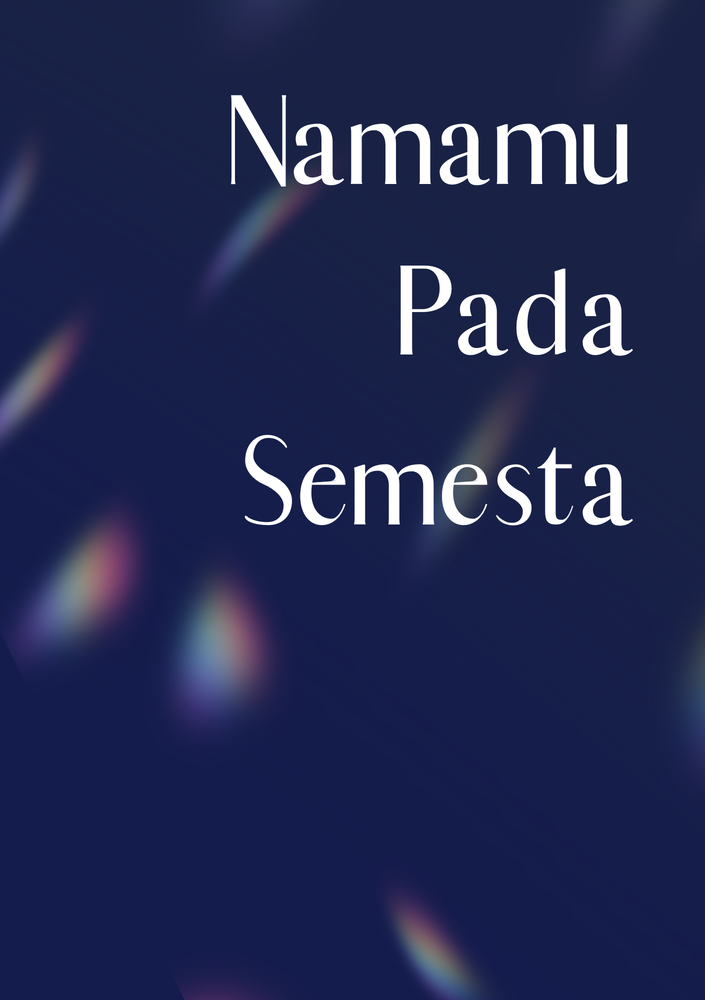
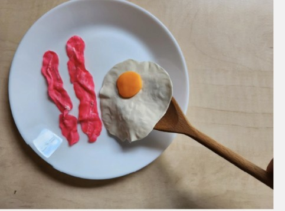

all works
A growing archive of things I've made, explored, and experimented with. Different mediums, same curiosity.

NUSWANTARA
Visual branding, promotional content, and event documentation for an Indonesian cultural night in Kiel.

Namamu Pada Semesta
How much of a universe can be built from knowing so little?

Vaterunser
A campus-set horror short inspired by an urban legend from Jakarta.

Red Hour Blue Hour
Two colours, eleven stories, and more than meets the eye.

Futteranbau und Klima
Turning a complex environmental topic into a little world of clay.
Nothing here just yet. More explorations are on their way!